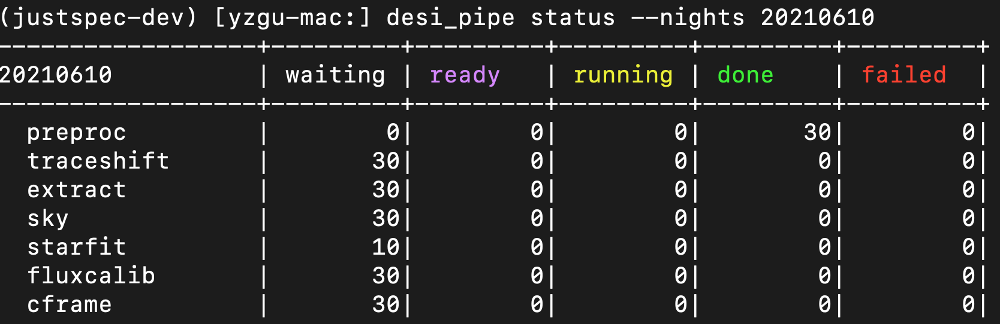

howtorun desispec
DOWNLOAD DATA
For more detailed information and explanations, you can refer to the webpage: https://desidatamodel.readthedocs.io/en/latest/DESI_ROOT/index.html
synchronous data@gravity
spectro/desi_spectro_calib/ ($DESI_SPECTRO_CALIB)
mkdir -p spectro/desi_spectro_calib/
cp -r /global/cfs/cdirs/desi/spectro/desi_spectro_calib/trunk spectro/desi_spectro_calib/
spectro/templates/ ($BASIS)
mkdir -p spectro/templates/basis_templates/basis_templates_svn/tags/
rsync -avLP -r –-exclude '.svn' guyizhou@perlmutter.nersc.gov:/global/cfs/cdirs/desi/spectro/templates/basis_templates/basis_templates_svn/tags/v3.1 templates/basis_templates/basis_templates_svn/tags/
spectro/data1 (real data of night 20210610):
rsync -avLP -r guyizhou@perlmutter.nersc.gov:/global/cfs/cdirs/desi/public/edr/spectro/data/20210610 data1/
spectro/data2 (simulation data):
rsync -avLP -r guyizhou@perlmutter.nersc.gov:/global/cfs/cdirs/desi/spectro/sim/pipetest/* data2/
target/skybrick/v3 ($SKYBRICKS_DIR)
rsync -avLP -r guyizhou@perlmutter.nersc.gov:/global/cfs/cdirs/desi/public/edr/target/skybricks/v3 target/skybricks/
spectro/redux: SPECPROD=fuji,guadalupe,iron (unnecessary file for running pipeline)
Download from NERSC.
https://desidatamodel.readthedocs.io/en/latest/DESI_SPECTRO_REDUX/SPECPROD/index.html
INSTALL DESISPEC
build python environment for DESISPEC
#----- build python environment
conda create -n desispec-test python=3.9
source activate desispec-test
# conda install mamba -c conda-forge
conda install numpy
conda install scipy
conda install conda-build # to use: conda develop /path/to/python/extral/package
conda install fitsio
conda install speclite
conda install pyproject
download associated packages and necessary data
#----- setup a prefix path to install
DESIHUB_ROOT=${HOME}/astro_soft/desihub/ # this is a example, choose any path you like
DESIHUB_ROOT=${HOME}/soft/ # this is a example, choose any path you like
mkdir -p ${DESIHUB_ROOT}
#----- Download associated packages from DESIHUB
cd ${DESIHUB_ROOT}
git clone "https://github.com/desihub/desiutil.git"
git clone "https://github.com/desihub/desidatamodel.git"
git clone "https://github.com/desihub/desimodel.git"
git clone "https://github.com/desihub/desitarget.git"
git clone "https://github.com/desihub/desisim.git"
git clone "https://github.com/desihub/specter.git"
git clone "https://github.com/desihub/specex.git"
git clone "https://github.com/desihub/desispec.git"
git clone "https://github.com/desihub/redmonster.git"
git clone "https://github.com/desihub/redrock.git"
git clone "https://github.com/desihub/gpu_specter.git"
#---- download the data from NERSC for the DESI packages (desiutil desimodel desitarget)
rsync -avLP -r guyizhou@perlmutter.nersc.gov:/global/common/software/desi/perlmutter/desiconda/20230111-2.1.0/code/desiutil/main/data ${DESIHUB_ROOT}/desiutil/data
rsync -avLP -r guyizhou@perlmutter.nersc.gov:/global/common/software/desi/perlmutter/desiconda/20230111-2.1.0/code/desimodel/main/data ${DESIHUB_ROOT}/desimodel/data
rsync -avLP -r guyizhou@perlmutter.nersc.gov:/global/common/software/desi/perlmutter/desiconda/20230111-2.1.0/code/desitarget/main/data ${DESIHUB_ROOT}/desitarget/data
install desispec
conda develop ${DESIHUB_ROOT}/lib/python3.9/site-packages # 为conda环境添加PYTHON库的搜索路径
#----- install packages
for pkg in desiutil desimodel desitarget desisim specter redmonster redrock gpu_specter desispec; do
cd ${DESIHUB_ROOT}/${pkg}
python setup.py clean
pip install . --prefix=${DESIHUB_ROOT}
# or: python setup.py install --prefix=${DESIHUB_ROOT}
done
export CC=gcc
export CXX=gcc
cd ${DESIHUB_ROOT}/specex
python setup.py clean
SPECEX_PREFIX=${DESIHUB_ROOT}
make -j 4 install
pip install . --prefix=${DESIHUB_ROOT}
#----- add associated data for desiutil, desimodel, and desitarget
DESI_PACKAGE_DATA=${DESIHUB_ROOT}/DESI_PACKAGE_DATA
for pkg in desiutil desimodel desitarget; do
cp -r ${DESI_PACKAGE_DATA}/${pkg}/data ${DESIHUB_ROOT}/lib/python3.9/site-packages/${pkg}/data
done
RUNING
modify code to debug
File "/Users/yzastro/soft/lib/python3.9/site-packages/desispec/pipeline/db.py", line 142, in all_tasks
for spectro in np.unique( fmdata["SPECTROID"] ) :
File "/Users/yzastro/miniconda3/envs/justspec-dev/lib/python3.9/site-packages/astropy/table/table.py", line 2055, in __getitem__
return self.columns[item]
File "/Users/yzastro/miniconda3/envs/justspec-dev/lib/python3.9/site-packages/astropy/table/table.py", line 264, in __getitem__
return OrderedDict.__getitem__(self, item)
KeyError: 'SPECTROID'
# Error report when running "desi_pipe create --root ..."
# SPECTROID
#--> py/desispec/pipeline/db.py
# fmdata = io.read_fibermap(fibermap)
# header = fmdata.meta
# 添加几行以应对格式和列名有不同的数据 -->
#
# if ('SPECTROID' not in fmdata.columns)&('PETAL_LOC' in fmdata.columns):
# fmdata["SPECTROID"]=fmdata["PETAL_LOC"]
# Error report when running "desi_pipe chain --tasktypes preproc"
# task "preproc" failed.
File "/Users/yzastro/soft/lib/python3.9/site-packages/desispec/scripts/preproc.py", line 270, in preproc_file
img = io.read_raw(infile, camera,
File "/Users/yzastro/soft/lib/python3.9/site-packages/desispec/io/raw.py", line 265, in read_raw
fibermap['FIBERSTATUS'][np.in1d(fibers,cfinder.badfibers(["BROKENFIBERS"]))] |= maskbits.fibermask.BROKENFIBER
File "/Users/yzastro/miniconda3/envs/justspec-dev/lib/python3.9/site-packages/astropy/table/table.py", line 2055, in __getitem__
return self.columns[item]
File "/Users/yzastro/miniconda3/envs/justspec-dev/lib/python3.9/site-packages/astropy/table/table.py", line 264, in __getitem__
return OrderedDict.__getitem__(self, item)
KeyError: 'FIBERSTATUS'
# check the log file, we find that "desi_preproc ..." failed. modify input fibermap
desi_preproc --infile /Users/yzastro/data/DESI_ROOT/spectro/data2/20191001/00003577/desi-00003577.fits.fz --cameras z0 --outfile /Users/yzastro/data/DESI_ROOT/spectro/redux/test2/preproc/20191001/00003577/preproc-z0-00003577.fits.gz
desi_preproc --infile /Users/yzastro/data/DESI_ROOT/spectro/data2/20191001/00003571/desi-00003571.fits.fz --cameras z5 --outfile /Users/yzastro/data/DESI_ROOT/spectro/redux/test2/preproc/20191001/00003571/preproc-z5-00003571.fits.gz
#
desi_compute_psf --input-image /Users/yzastro/data/DESI_ROOT/spectro/redux/test2/preproc/20191001/00003571/preproc-z9-00003571.fits.gz --output-psf /Users/yzastro/data/DESI_ROOT/spectro/redux/test2/exposures/20191001/00003571/psf-z9-00003571.fits --extra --trace-deg-wave 7 --trace-deg-x 7 --trace-prior-deg 4
# SPECTROID
#--> py/desispec/pipeline/db.py
# fmdata = io.read_fibermap(fibermap)
# header = fmdata.meta
# 添加几行以应对格式和列名有不同的数据 -->
#
# if ('SPECTROID' not in fmdata.columns)&('PETAL_LOC' in fmdata.columns):
# fmdata["SPECTROID"]=fmdata["PETAL_LOC"]
Traceback (most recent call last):
File "/Users/yzastro/soft/bin/desi_pipe_exec", line 15, in <module>
sys.exit(pipe_exec.main(args))
File "/Users/yzastro/soft/lib/python3.9/site-packages/desispec/scripts/pipe_exec.py", line 139, in main
ready, done, failed = pipe.run_task_list(args.tasktype, tasklist, opts,
File "/Users/yzastro/soft/lib/python3.9/site-packages/desispec/pipeline/run.py", line 424, in run_task_list
tt = task_type(worktasks[t])
IndexError: list index out of range
# Error report (LAPACK) when running "desi_pipe"
conda install numpy
conda install scipy
conda install numba
# Error report when running "desi_pipe create --root ..."
# SPECTROID
#--> py/desispec/pipeline/db.py
# fmdata = io.read_fibermap(fibermap)
# header = fmdata.meta
# 添加几行以应对格式和列名有不同的数据 -->
#
# if ('SPECTROID' not in fmdata.columns)&('PETAL_LOC' in fmdata.columns):
# fmdata["SPECTROID"]=fmdata["PETAL_LOC"]
# if ('TARGET_RA' not in fmdata.columns)&('RA_TARGET' in fmdata.columns):
# fmdata["TARGET_RA"]=fmdata["RA_TARGET"]
# if ('TARGET_DEC' not in fmdata.columns)&('DEC_TARGET' in fmdata.columns):
# fmdata["TARGET_DEC"]=fmdata["DEC_TARGET"]
#
#--> py/desispec/io/fibermap.py
#
# 添加几行以应对格式和列名有不同的数据 -->
# if ('SPECTROID' not in fibermap.columns)&('PETAL_LOC' in fibermap.columns):
# fibermap["SPECTROID"]=fibermap["PETAL_LOC"]
# def empty_fibermap():
# uncommend line 250: assert set(fibermap.colnames) == set([x[0] for x in columns])
# 然后重新安装reinstall:
cd ${DESIHUB_ROOT}/desispec
pip install . --prefix=${DESIHUB_ROOT}
# Error report when running "desi_proc -n 20210610 -e 00093262"
# FileNotFoundError: [Errno 2] No such file or directory: '/Users/yzastro/data/DESI_ROOT/spectro/redux/svdc/exposures/20210610/00093262/frame-b0-00093262-no-badcolumn-mask.fits.gz' -> '/Users/yzastro/data/DESI_ROOT/spectro/redux/svdc/exposures/20210610/00093262/frame-b0-00093262.fits.gz'

RUN DESISPEC ()
https://desi.lbl.gov/trac/wiki/Pipeline/RunningSpectroPipeline
export DESIHUB_ROOT=${HOME}/soft/
export DESI_ROOT='/Users/yzastro/data/DESI_ROOT'
export DESI_SPECTRO_DATA=$DESI_ROOT/spectro/data
export DESI_SPECTRO_REDUX=$DESI_ROOT/spectro/redux
export DESI_SPECTRO_CALIB=$DESI_ROOT/spectro/desi_spectro_calib/trunk
export DESI_SPECTRO_BASIS=$DESI_ROOT/spectro/templates/basis_templates/v3.1
export SKYBRICKS_DIR=$DESI_ROOT/target/skybricks/v3
export SPECPROD='test1'
desi_pipe create --root $DESI_ROOT \
--data $DESI_SPECTRO_DATA \
--redux $DESI_SPECTRO_REDUX \
--prod $SPECPROD \
--basis $DESI_SPECTRO_BASIS \
--calib $DESI_SPECTRO_CALIB \
--db-sqlite --force
source $DESI_SPECTRO_REDUX/$SPECPROD/setup.sh
RUN DESISPEC
https://desi.lbl.gov/trac/wiki/Pipeline/RunningSpectroPipeline
export DESIHUB_ROOT=${HOME}/soft/
export DESI_ROOT='/Users/yzastro/data/DESI_ROOT'
export DESI_SPECTRO_DATA=$DESI_ROOT/spectro/data2
export DESI_SPECTRO_REDUX=$DESI_ROOT/spectro/redux
export DESI_SPECTRO_CALIB=$DESI_ROOT/spectro/desi_spectro_calib/trunk
export DESI_SPECTRO_BASIS=$DESI_ROOT/spectro/templates/basis_templates/v3.1
export SKYBRICKS_DIR=$DESI_ROOT/target/skybricks/v3
export SPECPROD='test2'
desi_pipe create --root $DESI_ROOT \
--data $DESI_SPECTRO_DATA \
--redux $DESI_SPECTRO_REDUX \
--prod $SPECPROD \
--basis $DESI_SPECTRO_BASIS \
--calib $DESI_SPECTRO_CALIB \
--db-sqlite --force
source $DESI_SPECTRO_REDUX/$SPECPROD/setup.sh
# open one terminal for monitoering
# --> desi_pipe top --once
# open another terminal for running
desi_pipe chain --tasktypes preproc
desi_pipe top --once
py/desispec/scripts/pipe.py ---> PipeUI.top (line 878)
dbpath = io.get_pipe_database()
db = pipe.load_db(dbpath, mode="r", user=args.db_postgres_user)
tasktypes = pipe.tasks.base.default_task_chain
py/desispec/pipeline/control.py ---> create (line 56)
db = pipedb.DataBaseSqlite(dbpath, "w")
os.environ["DESI_SPECTRO_DB"] = dbpath
---> py/desispec/pipeline/db.py DataBaseSqlite (line 971)
key function:
---> py/desispec/pipeline/db.py all_tasks (line 78)
time desi_pipe go # to run all 3 exp
desi_pipe tasks --nights 20210610
time desi_pipe chain --nights 20210610 --tasktypes preproc
desi_pipe chain –nights 20210610 –tasktypes psf
desi_pipe status --nights 20210610 --tasktypes psf

fibermap -> preproc -> frame -> sframe+cframe -> spectra -> coadd
flowchart
fibermap -> preproc -> frame -> sframe+cframe -> spectra -> coadd
https://github.com/desihub/desispec/pull/2176
desi_assemble_fibermap -n 20210610 -e 00093262 -o fibermap-00093262.fits --overwrite
desi_pipe tasks --nights 20210610
desi_pipe top --once
desi_proc -n 20210610 -e 00093262
desi_pipe update --nights, nside=64, expid=None):
desi_pipe go --nersc cori-knl --resume
desi_pipe go --nights 2021061 --nersc cori-knl --resume
desi_pipe update --nights 2021061 --nside 128 --expid 93262
SETUP DESISPEC
#---- BASIS
cp -r /global/cfs/cdirs/desi/spectro/templates/basis_templates/basis_templates_svn/tags/v3.1 /pscratch/sd/g/guyizhou/
#---- DESI_SPECTRO_CALIB
cp -r /global/cfs/cdirs/desi/spectro/desi_spectro_calib/trunk /pscratch/sd/g/guyizhou/
#---- SKYBRICKS_DIR
scp -r guyizhou@perlmutter.nersc.gov:/global/cfs/cdirs/desi/public/edr/target/skybricks/v3 .
#----- install desispec and relative packages from DESIHUB
!/bin/bash
DESIHUB_ROOT=${HOME}/soft/ # prefix path
mkdir -p ${DESIHUB_ROOT}
# 为conda环境添加PYTHON库的搜索路径
conda develop ${DESIHUB_ROOT}/lib/python3.9/site-packages
# cd ${pref}
# export PYTHONPATH=$PYTHONPATH:${pref}
rm -rf desidatamodel/ desisim/ desitarget/
rm -rf desimodel/ desispec/ desiutil
rm -rf specex/ specter/ redmonster/ redrock/
rm -rf lib bin
# This should be your actual install location...
# cd ${pref}/specex
# make clean
# SPECEX_PREFIX=${pref} make -j 4 install
# cd ${pref}
rm -rf desiutil desimodel desitarget desisim specter specex desispec redmonster redrock
DOWNLOAD DATA to test
#
#---- raw DATA on NERSC
#
# night = 20210610
# expid = 00093262
cp /global/cfs/cdirs/desi/public/edr/spectro/data/20210610/00093262 /pscratch/sd/g/guyizhou/
#
#---- DATA for building fibermap, calibrate, fitting on NERSC
#
#---- BASIS
cp -r /global/cfs/cdirs/desi/spectro/templates/basis_templates/basis_templates_svn/tags/v3.1 /pscratch/sd/g/guyizhou/
#---- DESI_SPECTRO_CALIB
cp -r /global/cfs/cdirs/desi/spectro/desi_spectro_calib/trunk /pscratch/sd/g/guyizhou/
#---- SKYBRICKS_DIR
scp -avLP -r guyizhou@perlmutter.nersc.gov:/global/cfs/cdirs/desi/public/edr/target/skybricks/v3 .
#---- download raw/simulate data for test
rsync -avLP -r guyizhou@perlmutter.nersc.gov:/global/cfs/cdirs/desi/public/edr/spectro/data/20210610 data1/
rsync -avLP -r guyizhou@perlmutter.nersc.gov:/global/cfs/cdirs/desi/spectro/sim/pipetest/* data2/
export CC=/opt/homebrew/opt/llvm/bin/clang export CXX=/opt/homebrew/opt/llvm/bin/clang++ export LDFLAGS=”-L/opt/homebrew/Cellar/llvm/17.0.6_1/lib” export CPPFLAGS=”-I/opt/homebrew/Cellar/llvm/17.0.6_1/include”
if(APPLE) if(CMAKE_C_COMPILER_ID MATCHES “Clang”) set(OpenMP_C “${CMAKE_C_COMPILER}” CACHE STRING “” FORCE) set(OpenMP_C_FLAGS “-fopenmp=libomp -Wno-unused-command-line-argument” CACHE STRING “” FORCE) set(OpenMP_C_LIB_NAMES “libomp” “libgomp” “libiomp5” CACHE STRING “” FORCE) set(OpenMP_libomp_LIBRARY ${OpenMP_C_LIB_NAMES} CACHE STRING “” FORCE) set(OpenMP_libgomp_LIBRARY ${OpenMP_C_LIB_NAMES} CACHE STRING “” FORCE) set(OpenMP_libiomp5_LIBRARY \({OpenMP_C_LIB_NAMES} CACHE STRING "" FORCE) endif() if(CMAKE_CXX_COMPILER_ID MATCHES "Clang") set(OpenMP_CXX "\){CMAKE_CXX_COMPILER}” CACHE STRING “” FORCE) set(OpenMP_CXX_FLAGS “-fopenmp=libomp -Wno-unused-command-line-argument” CACHE STRING “” FORCE) set(OpenMP_CXX_LIB_NAMES “libomp” “libgomp” “libiomp5” CACHE STRING “” FORCE) set(OpenMP_libomp_LIBRARY ${OpenMP_CXX_LIB_NAMES} CACHE STRING “” FORCE) set(OpenMP_libgomp_LIBRARY ${OpenMP_CXX_LIB_NAMES} CACHE STRING “” FORCE) set(OpenMP_libiomp5_LIBRARY ${OpenMP_CXX_LIB_NAMES} CACHE STRING “” FORCE) endif() endif()
export CC=/usr/bin/gcc export CXX=/usr/bin/g++ rm -rf CMakeCache.txt CMakeFiles cmake CMakeLists.txt -DBLAS_LIBRARIES=”/opt/homebrew/opt/openblas/lib” -DLAPACK_LIBRARIES=”/opt/homebrew/opt/lapack/lib” cmake –build . –config Release – -j8